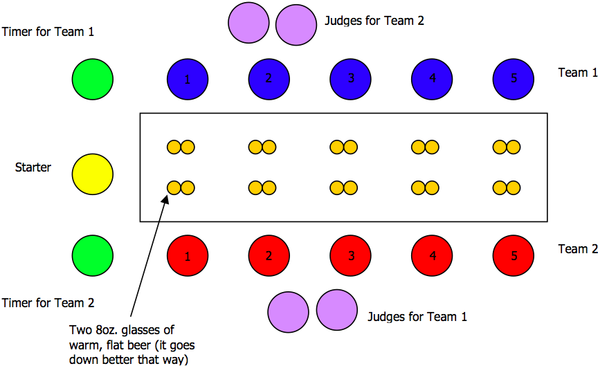

Section 1.0: Teams
A full team consists of five (5) members; this is the absolute maximum
number of team members allowed. If five (5) members are not wanted, a
team may race with as little as one (1) member (although this is not
recommended). Having fewer members on a team does not reduce the
amount of beer being consumed.
Section 1.1: Team Name
A team name is an important decision in an event such as BOAT Racing.
A name that in some way relates the team to a field of study and or a
place of residence is usually used. For example, a computer engineering
team in Waterloo is called Green Eggs and Ram.
Section 1.2: Team Shirts/Jerseys
To accompany the team name, each team should have distinguishing
shirts or jerseys. It looks much classier when a team kneels down
while matching; it also encourages team spirit. Lastly, in drunken
states, it helps other people from different teams to recognize who
you are and which team/school you are hailing from.
Section 1.3: Positions
There are five positions on the table for each team. They are as
follows:
- Lead
- Break Away
- Pivot
- Turn Around
- Anchor
Section 2.0: Complete Guide to Proper BOAT Racing
Section 2.1: The Set Up
To set up the race, one would need ten half-pint glasses fully filled
with warmed flattened beer, two teams of the same sex, a minimum of
two judges and one timer on each side, and a pre-approved starter. The
two teams line up facing each other on opposite sides of the official
BOAT racing table. The starter and timers stand at the starting end of
the table and the judges stand across the table from the team they
will be judging. See Figure 1 for an aerial view of the race. For
judging rules and regulations, see Section 3.0.
Note: Usually, female races will only have five half-pint glasses as opposed to the male races (as shown in Figure 1) which have ten half-pint glasses. Female races only drink in one direction.
Note: Usually, female races will only have five half-pint glasses as opposed to the male races (as shown in Figure 1) which have ten half-pint glasses. Female races only drink in one direction.

Figure 1. BOAT Racing Layout
Section 2.2: The Starting Procedure
To start the race, the starter will tell the racers to assume the
racing position on their knees by saying "Racers down." The starter
proceeds to ask three important questions, "Judges ready? Timers
ready? Racers ready?" Once all parties are ready to race the starter
does his most important job, he starts the race. To do this the
starter shall use a pipe wrench and bang it on the table in unison
with loudly exclaiming "3, 2, 1, drink!"
Section 2.3: The Order of Completion
Male racers will drink their first drink in order from one (1) to five
(5) and then their second drink in opposite order, from five (5) to one
(1). During this time, no two members of a team may touch their glass at
the same time. There is only one beer per team being drunk at a time.
For teams of less then five here is the exception. Any or all racers may drink two (2) to nine (9) in a row if necessary as long as the team still follows the 'down and back' flow to the race.
Female racers will only have five (5) glasses and will then only go from one (1) to five (5) and be finished. If there are less than five racers all five glasses remain in their proper positions unlike the male races. If a team of four girls decides to race, one member must stand after she is finished her first glass and run to the next position to finish her final glass. In a guy's race, racers are allowed to have extra glasses in front of them.
For teams of less then five here is the exception. Any or all racers may drink two (2) to nine (9) in a row if necessary as long as the team still follows the 'down and back' flow to the race.
Female racers will only have five (5) glasses and will then only go from one (1) to five (5) and be finished. If there are less than five racers all five glasses remain in their proper positions unlike the male races. If a team of four girls decides to race, one member must stand after she is finished her first glass and run to the next position to finish her final glass. In a guy's race, racers are allowed to have extra glasses in front of them.
Section 2.4: The Race
As soon as the starter's bottle hits the table the lead off racer can
touch his glass and begin to drink. The racer in the 2nd spot cannot
touch his glass until the lead off racer's glass has
touched the table. Continue this relay style procedure until one gets to
the anchor. He/she may touch both his/her glasses at once but not until
the 4th racer's glass is touching the table. The anchor cannot have both
glasses off the table at the same time.
Section 2.5: The Finish
Once the final glass has hit the table the races are almost done but
racers are not to stand up. The starter will call "Glasses in." This is
when racers place their glasses calmly into the middle of the table to
help out with cleaning. The starter will then ask the judges to rule on
any spills or disqualification. The combination of the race time and
penalties for spills determines the winner, which is announced by the
starter. Once the winner is announced racers are allowed to stand and
congratulate each other for an excellent race.
Section 2.6: Racing Terms
Spill
This happens when one racer leaves more than two fingers of beer in the bottom of the glass and/or spills 10% of their beer. The two fingers used for measuring shall be the ring and pinky finger of the starter, and they shall measure from the bottom of the table (not the glass). Indicators for spills include but are not limited to constant streams of beer flowing off the face of the racer.DQ
Disqualification - this happens for the following reasons:- Broken Glass (even if it's an accident)
- More than 3 spills
- Discontinuity at a personal level
- Drinking must be a fluent motion; if the racer ceases to drink from his/her glass and then restarts drinking it shall be deemed discontinuous
- Discontinuity at a team level
- This occurs when somebody touches a glass too early or drinks out of rotation
- Cheating, even if it's involuntary
- Ryan Walker-ing (i.e., throwing your beer over your shoulder)
- Puking at the table
Section 3.0: Judging
Section 3.1: Rules and Regulations
A set of judges is required to oversee a proper race. They watch the
team on the opposite
side of the table for spills and anything that would constitute a DQ.
When called upon by the starter at the end of the race the judges will
signal how many spills they saw or if the team is disqualified. A clean
race (i.e., spills totaling zero (0)) is represented by holding out a
closed fist. Fingers are used to indicate spills, to a maximum of three
(3). The crossing of forearms in an 'x' shows a DQ.
Section 3.2: Hints for Judges
- Always converse with the partner judge to come to a conclusion before showing. The starter should wait until both teams of judges are ready before asking for the final call.
- All judges should have a meeting beforehand to determine "leniency" on the tricky calls. Often, races will start off tough so that people get used to the rules before they get drunk and sloppy (at which point judges can be a little nicer).
- An easy spill to notice is when more than two fingers are left in the glass. In this case, the judge will give the glass in question to the starter who will put his/her pinky and ring fingers together and place them so that the pinky is touching the table; if the there is beer in the glass above the ring finger it is considered a spill.
- Another way of noticing spills is if there is an excess of beer flowing from the mouth, for the most part, if there are two noticeable streams flowing off the face (one on each side of the glass), or by observing beer on the racer's shirt.
- Probably the most difficult method of calling spills is a combination of the above two (3 and 4), when a racer may not leave two fingers in the glass and may not spill enough on themselves to constitute a spill, but perhaps a combination of the two can constitute a spill.
Section 4.0: Timing and Final Notes
Timing is simple; start the clock once the starter's bottle hits the
table and stop the clock once the team's last glass has hit the table.
There will be a timer timing both teams so as to get an accurate time for
each team. When a final time is given, it will include spills. Each spill
will put an additional five (5) seconds on your time, to a maximum of
fifteen (15) seconds. More than three spills are considered a DQ.
Some helpful rules that might resolve and/or start arguments:
Some helpful rules that might resolve and/or start arguments:
- A racer does not have to finish the beer in his/her mouth before putting down the glass. The beer must eventually go down the hatch before the racer stands up.
- Spilling is an art - don't let judges call just anything a spill. It has to be an obvious waste of beer. If a racer spills a little on his/her shirt or leaves a bit in the glass it's still considered clean, or no spill.
- Trash talking is MANDATORY; everything is fair game (e.g., mothers, sisters, dogs, etc.). BUT, keep in mind that it is done for fun, and that after the race you will be expected to hug the person that you were racing against.
- Yelling at the judges never helps, but it never hurts either, you won't know better anyways; you're shit-bombed, kudos.